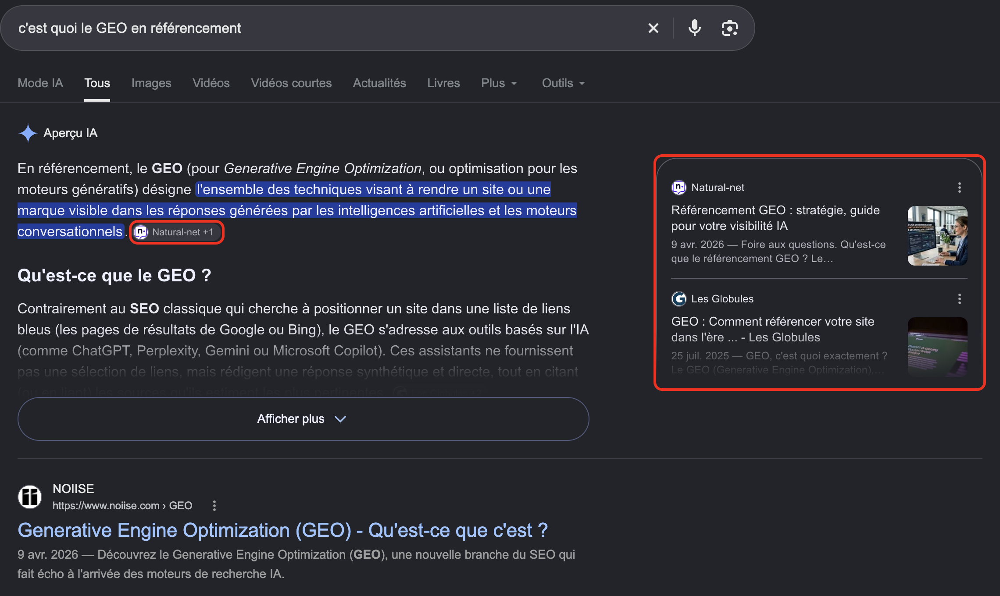
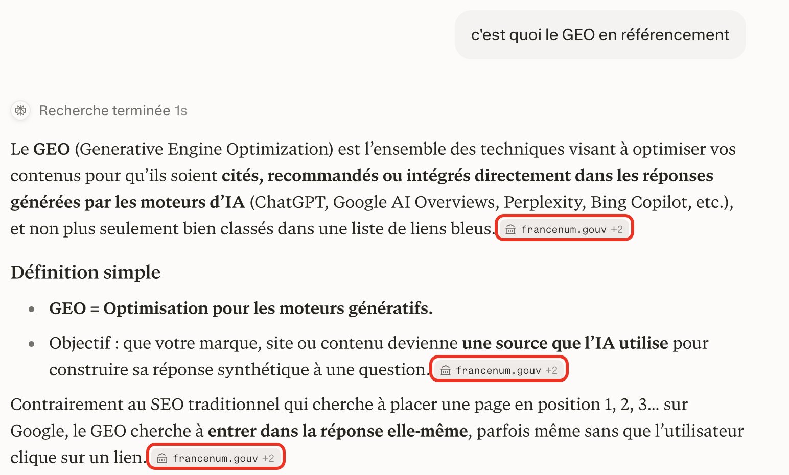

SEO, AEO, GEO : quelle différence ?
SEOdepuis 1997
Search Engine Optimization
« Être bien classé dans les liens de Google. »
On gagne : un clic
AEOdepuis 2014
Answer Engine Optimization
« Être LA réponse affichée : Aperçu IA, extrait, assistant vocal. »
On gagne : la réponse sans clic
GEOdepuis 2023


Generative Engine Optimization
« Être cité ou recommandé par une IA. »
On gagne : une mention, un lien
Autres termes
- AIOArtificial Intelligence Optimization
- LLMOLarge Language Model Optimization
- AI SEOle SEO pensé pour les IA
- GSOGlobal Search Optimization

AEO : Google répond lui-même
GEO : l'IA cite ses sourcesSources : Wikipédia (SEO, GEO) ; Google, blog (extraits optimisés, 2014) ; Princeton (GEO, 2023) ; Frédéric Gonzalo ; recherches Google et Perplexity, (consulté le 27/09/2026)
2 / 5
Est-ce que quelqu'un a déjà entendu parler du GEO ?
Il y a trois sigles à bien distinguer. Le SEO, c'est ce qu'on voit en cours : être bien classé dans les liens de Google, pour obtenir un clic.
L'AEO, pour Answer Engine Optimization, c'est devenir la réponse elle-même : l'Aperçu IA, l'extrait en haut de page, la réponse d'un assistant vocal. Sur la capture de gauche, Google répond directement à « c'est quoi le GEO », avant tous les liens.
Le GEO, pour Generative Engine Optimization, c'est être cité ou recommandé par une IA comme ChatGPT ou Perplexity. À droite, Perplexity écrit sa réponse et cite ses sources, encadrées en rouge. Pour une marque, l'objectif est d'être l'une de ces sources.
Et ce n'est pas une mode passagère. Le SEO existe depuis 1997. Depuis 2014, Google affiche directement la réponse en haut de la page, c'est le début de l'AEO. Dès 2015, Google utilise une IA, RankBrain, pour classer ses résultats. Et le terme GEO est né fin 2023, dans une étude de l'université de Princeton.
On entend aussi AIO, LLMO ou AI SEO : ce sont des noms voisins, et en 2026 il n'existe pas encore de définition officielle qui les sépare.
Voyons maintenant pourquoi ça compte déjà.